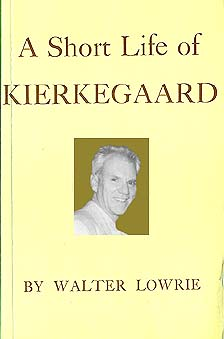

<html><head><title>The Paradox of Faith</title></html>
<body background="bluet.jpg" width="50" height="50" border=0 BGCOLOR="ffffff" TEXT="#1f1f6f" LINK="#ff0000" ALINK="#ffff00" VLINK="#fff000">

<center></center><P>
<a name="top">
<center></center><P>

Last night, Soren Kierkegaard came to me in a dream.<P>

Or maybe it was my husband talking in his sleep again.  Anyway, one of them said, "The tragic hero renounces himself in order to express the universal, the knight of faith renounces the universal in order to become the individual.  As has been said, everything depends upon how one is placed.  He who believes that it is easy enough to be the individual can always be sure that he is not a knight of faith, for vagabonds and roving geniuses are not men of faith.  The knight of faith knows, on the other hand, that it is glorious to belong to the universal.  He knows that is it is beautiful and salutary to be the individual who translates himself into the universal...<P>

"...This man has made and every instant is making the movements of infinity.  With infinite resignation he has drained the cup of life's profound sadness, he knows the bliss of the infinite, he senses the pain of renouncing everything...He resigned everything infinitely, and then he grasped everything again by virtue of the absurd."<P>

Sunday night, he goes to sleep a knight of faith.  Monday morning, he wakes up a tragic hero.<P>

I felt myself slipping down with infinite slowness into the white light behind my eyes.  I was too tired to open my eyes and quiet the light.  I was slipping down, like a drunk at night to his favorite bar, into an infinite sadness inside.  I reached out to touch the person sleeping beside me.<P>

"Soren?" I said.  "Levi?"<P>

He recoiled.  "Ugh!" he said.  "Your hands are cold."<P>

It was already three hours into Monday morning.  I shouldn't have awakened him.  It's just that there was this inescapable light behind my eyes.  Even in the dark, I can't escape it.  It's like when you're lying out in the sun with your eyes closed.<P>

Oh well.<P>

I fell back to sleep thinking of Hamlet, the Prince of Denmark, of ice crashing into ice in the cold Copenhagen Harbor, and of <a href="dr_soran.html">The Short Life of Soren Kierkegaard</a>, which today I can't seem to find anywhere on my shelves.<P>

<center><I><a href="#top">to top</a></I></center><P>
</BODY></HTML>
